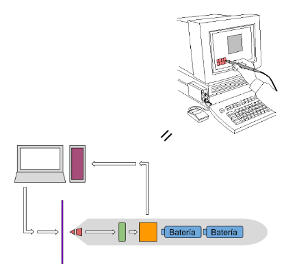
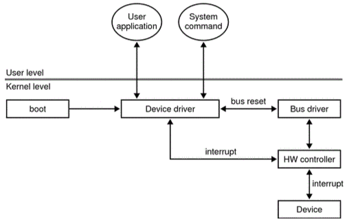

Para su funcionamiento requiere de un driver específico y de un software especialmente diseñado que permita su reconocimiento para trabajar junto a un monitor; de esta manera, aprovecha las cualidades fotosensibles del lápiz brindando mayor precisión que un mouse. Poniendo en contexto, un driver o driver es una pieza de código escrita para poder interpretar información recibida de un hardware externo y enviarla al sistema operativo, consiguiendo interactuar con el dispositivo. Pueden ser necesarios muchos drivers para procesar toda la información entrante. Actualmente es un dispositivo en desuso, reemplazado por tecnologías más prácticas como las pantallas táctiles. Para mantener una imagen, las pantallas envían constantemente un haz de electrones que va fila por fila actualizando los píxeles. Esto es aprovechado por el lápiz óptico para detectar la posición mediante su sensor; En el momento en que la punta del lápiz se coloca sobre la pantalla, éste escanea por medio de un sensor infrarrojo el momento en que el haz de electrones pasa por esa posición. El hecho de que la actualización de píxeles sea tan precisa permite conocer el tiempo estimado que tarda en actualizarse un pixel en específico. El driver trabaja con un cronómetro que comienza a contar al mismo tiempo que la pantalla, por lo que, al momento en que ocurre la coincidencia, el lápiz óptico comunica el tiempo donde se encontró con el haz de electrones y lo compara con el tiempo que tiene la pantalla, obteniendo la posición exacta del pixel.
Como se mencionó anteriormente, la llegada de los modernos dispositivos de pantalla táctil capacitiva, particularmente el iPhone, hizo que los lápices ópticos cayeran en desuso durante algunos años, debido a la poca practicidad que generaban los mismos (ej.: debían ser sostenidos sobre una pantalla en vertical). Actualmente se utilizan mayormente versiones con una tableta digitalizadora para el ingreso de la posición del lápiz. Su funcionamiento es similar al descrito anteriormente: utiliza una malla de alambres que emite y recibe señales electromagnéticas. El circuito interno del lápiz permite enviar la información sobre la posición a la pantalla para posteriormente ser enviado al ordenador. Hoy por hoy, se encuentran principalmente dos tipos de lápices ópticos aún utilizados en el mercado:
Muchos de los lápices presentes en el mercado suelen ser compatibles únicamente con dispositivos que comparten su marca. Para esto existen algunas iniciativas por parte de empresas que intentan generar un estándar que sea compatible en todos los dispositivos táctiles.
Se definen un conjunto de reglas para conseguir una comunicación bidireccional entre el lápiz y la computadora; esto permite que el lápiz recuerde las preferencias del usuario para el color de la tinta y el trazo, además de recibir distintos tipos de información sobre la fuerza del trazo, velocidad y orientación del lápiz.
Los drivers de un dispositivo son accedidos en las siguientes situaciones:
El siguiente diagrama ilustra cómo interactúa el driver de un dispositivo con el resto del sistema.
Cuando el dispositivo es conectado, el kernel solicita el driver del dispositivo para inicializarlo. Si el usuario quiere utilizar el dispositivo, el sistema operativo debe cargar los drivers y llamar a la función específica que se quiere realizar. El driver se encarga de enviar las instrucciones exactas al dispositivo para ejecutar la acción. En el momento en el que las instrucciones fueron completadas, el dispositivo devuelve la información resultante al driver, el cual genera una interrupción en el curso de ejecución actual para procesar la información recibida. Finalmente, el procesador envía la información al sistema operativo para ejecutar las acciones solicitadas por el usuario.
Para entender el funcionamiento de un lápiz óptico actual, debemos entender el concepto de bus de la computadora. El bus es un sistema de comunicación que transfiere datos entre componentes, ya sea a través de cables, pistas del circuito o componentes como capacitores y circuitos integrados. Un lápiz integrado a un sistema operativo puede utilizar cualquiera de los drivers que la empresa de éste provee para conectarse. Para esto el bus debe proporcionar el driver de minipuerto HID (“dispositivo de interfaz humana”) compatible con el sistema operativo. Al conjunto de drivers necesarios para el funcionamiento de un dispositivo se lo conoce como “stack” o “pila” en español. A modo de ilustración, en el siguiente diagrama se muestra la pila de drivers de Windows 11 para un dispositivo pen (lápiz óptico de Microsoft).
Este stack de controladores es un ejemplo de los elementos que conforman la estructura que sigue el lápiz óptico para Windows 11. Es necesario un análisis sobre las estructuras de stacks que siguen otros sistemas operativos para permitir el correcto funcionamiento del dispositivo.